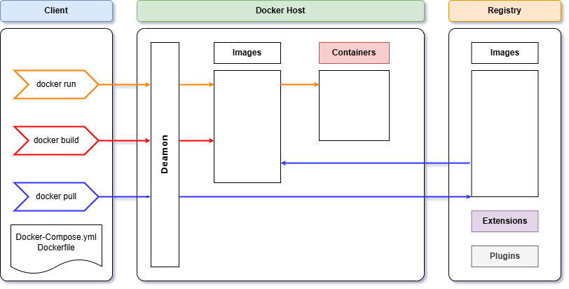

Keywords
- Docker Engine, Docker CLI, Docker Compose, Docker Build, Docker Image, Docker Container, Dockerfile
Docker Architecture

Docker Deamon
This is a background process that manages Docker objects such as images, containers, storage volumes, and networks.
Images
Docker image is packed software that includes everything needed to run an application.
| Build an image using a Dockerfile in current directory |
| $docker build -t <image_name> . |
| Build an image using a Dockerfile without cache |
| $docker build -t <image_name> --no-cache . |
| Create an image from a container's changes |
| $docker commit <container> |
| Show history of an image |
| $docker history <image_name> |
| Save an image to an archive file |
| $docker save -o <tar_archive_file> <image_name> |
| Load an image from an archive file |
| $docker load -i <tar_archive_file> |
| List local images |
| $docker images |
| Delete an Image |
| $docker rmi <image_name> |
| Remove all unused images |
| $docker image prune |
Containers
A container is a runtime instance of a docker image.
| Create a container without starting it |
| $docker create <image_name> |
| Create and run a container from an image, with a custom name |
| $docker run --name <container_name> <image_name> |
| Create and run a container with and publish a container’s port(s) to the host |
| $docker run -p <host_port>:<container_port> <image_name> |
| Create and run a container in the background |
| $docker run -d <image_name> |
| Start or stop an existing container |
| $docker start|stop <container> |
| Kill a running container |
| $docker kill <container> |
| Remove a stopped container |
| $docker rm <container> |
| Open a shell inside a running container |
| $docker exec -it <container> sh |
| Fetch and follow the logs of a container |
| $docker logs -f <container> |
| To inspect a running container |
| $docker inspect <container> |
| To list currently running containers |
| $docker ps |
| List all docker containers (running and stopped) |
| $docker ps --all |
| View resource usage stats |
| $docker container stats |
| Copy files/folders between a container and the host's filesystem |
| $docker cp <container>:<source_path> <destination_path>|- |
| $docker cp <source_path>|- <container>:<destination_path> |
Docker Hub
Docker Hub is a service provided by Docker for finding and sharing container images.
| Search Hub for an image |
| $docker search <image_name> |
| Pull an image from a Docker Hub |
| $docker pull <image_name> |